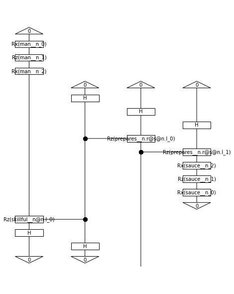

[1]:
BATCH_SIZE = 10
EPOCHS = 15
SEED = 42
[2]:
import torch
import random
import numpy as np
torch.manual_seed(SEED)
random.seed(SEED)
np.random.seed(SEED)
[3]:
def read_data(filename):
labels, sentences = [], []
with open(filename) as f:
for line in f:
t = float(line[0])
labels.append([t, 1-t])
sentences.append(line[1:].strip())
return labels, sentences
train_labels, train_data = read_data('../examples/datasets/mc_train_data.txt')
dev_labels, dev_data = read_data('../examples/datasets/mc_dev_data.txt')
test_labels, test_data = read_data('../examples/datasets/mc_test_data.txt')
[4]:
train_data[:5]
[4]:
['skillful man prepares sauce .',
'skillful man bakes dinner .',
'woman cooks tasty meal .',
'man prepares meal .',
'skillful woman debugs program .']
[5]:
train_labels[:5]
[5]:
[[1.0, 0.0], [1.0, 0.0], [1.0, 0.0], [1.0, 0.0], [0.0, 1.0]]
[6]:
from lambeq import BobcatParser
reader = BobcatParser(verbose='text')
raw_train_diagrams = reader.sentences2diagrams(train_data)
raw_dev_diagrams = reader.sentences2diagrams(dev_data)
raw_test_diagrams = reader.sentences2diagrams(test_data)
Tagging sentences.
Parsing tagged sentences.
Turning parse trees to diagrams.
Tagging sentences.
Parsing tagged sentences.
Turning parse trees to diagrams.
Tagging sentences.
Parsing tagged sentences.
Turning parse trees to diagrams.
[7]:
from lambeq import remove_cups
train_diagrams = [remove_cups(diagram) for diagram in raw_train_diagrams]
dev_diagrams = [remove_cups(diagram) for diagram in raw_dev_diagrams]
test_diagrams = [remove_cups(diagram) for diagram in raw_test_diagrams]
[8]:
train_diagrams[0].draw()

[9]:
from lambeq import AtomicType, IQPAnsatz
ansatz = IQPAnsatz({AtomicType.NOUN: 1, AtomicType.SENTENCE: 1},
n_layers=1, n_single_qubit_params=3)
train_circuits = [ansatz(diagram) for diagram in train_diagrams]
dev_circuits = [ansatz(diagram) for diagram in dev_diagrams]
test_circuits = [ansatz(diagram) for diagram in test_diagrams]
train_circuits[0].draw(figsize=(6, 8))
[10]:
from lambeq import PennyLaneModel
all_circuits = train_circuits + dev_circuits + test_circuits
# if no backend_config is provided, the default is used, which is the same as below
backend_config = {'backend': 'default.qubit'} # this is the default PennyLane simulator
model = PennyLaneModel.from_diagrams(all_circuits,
probabilities=True,
normalize=True,
backend_config=backend_config)
model.initialise_weights()
[11]:
import pennylane as qml
qml.default_config['qiskit.ibmq.ibmqx_token'] = 'my_API_token'
qml.default_config.save(qml.default_config.path)
[12]:
backend_config = {'backend': 'qiskit.ibmq',
'device': 'ibmq_manila',
'shots': 1000}
q_model = PennyLaneModel.from_diagrams(all_circuits,
probabilities=True,
normalize=True,
backend_config=backend_config)
q_model.initialise_weights()
[13]:
qml.default_config['honeywell.global.user_email'] = ('my_Honeywell/Quantinuum_'
'account_email')
qml.default_config.save(qml.default_config.path)
[14]:
backend_config = {'backend': 'honeywell.hqs',
'device': 'H1-1E',
'shots': 1000}
h_model = PennyLaneModel.from_diagrams(all_circuits,
probabilities=True,
normalize=True,
backend_config=backend_config)
h_model.initialise_weights()
[15]:
from lambeq import Dataset
train_dataset = Dataset(train_circuits,
train_labels,
batch_size=BATCH_SIZE)
val_dataset = Dataset(dev_circuits, dev_labels)
[16]:
def acc(y_hat, y):
return (torch.argmax(y_hat, dim=1) ==
torch.argmax(y, dim=1)).sum().item()/len(y)
def loss(y_hat, y):
return torch.nn.functional.mse_loss(y_hat, y)
[17]:
from lambeq import PytorchTrainer
trainer = PytorchTrainer(
model=model,
loss_function=loss,
optimizer=torch.optim.Adam,
learning_rate=0.1,
epochs=EPOCHS,
evaluate_functions={'acc': acc},
evaluate_on_train=True,
use_tensorboard=False,
verbose='text',
seed=SEED)
[18]:
trainer.fit(train_dataset, val_dataset)
Epoch 1: train/loss: 0.2597 valid/loss: 0.2860 train/acc: 0.5429 valid/acc: 0.5000
Epoch 2: train/loss: 0.1886 valid/loss: 0.0731 train/acc: 0.7714 valid/acc: 0.8667
Epoch 3: train/loss: 0.0756 valid/loss: 0.0897 train/acc: 0.9429 valid/acc: 0.8667
Epoch 4: train/loss: 0.0516 valid/loss: 0.0375 train/acc: 0.9714 valid/acc: 1.0000
Epoch 5: train/loss: 0.0244 valid/loss: 0.0216 train/acc: 0.9857 valid/acc: 1.0000
Epoch 6: train/loss: 0.0362 valid/loss: 0.0183 train/acc: 0.9571 valid/acc: 0.9667
Epoch 7: train/loss: 0.0153 valid/loss: 0.0363 train/acc: 0.9857 valid/acc: 0.9667
Epoch 8: train/loss: 0.0204 valid/loss: 0.0496 train/acc: 0.9857 valid/acc: 0.9333
Epoch 9: train/loss: 0.0314 valid/loss: 0.0312 train/acc: 0.9714 valid/acc: 0.9667
Epoch 10: train/loss: 0.0383 valid/loss: 0.0707 train/acc: 0.9429 valid/acc: 0.9333
Epoch 11: train/loss: 0.0364 valid/loss: 0.1187 train/acc: 0.9571 valid/acc: 0.8333
Epoch 12: train/loss: 0.0423 valid/loss: 0.1750 train/acc: 0.9429 valid/acc: 0.7333
Epoch 13: train/loss: 0.0753 valid/loss: 0.0993 train/acc: 0.8857 valid/acc: 0.8667
Epoch 14: train/loss: 0.0419 valid/loss: 0.0970 train/acc: 0.9571 valid/acc: 0.8333
Epoch 15: train/loss: 0.0512 valid/loss: 0.0555 train/acc: 0.9286 valid/acc: 0.9667
Training completed!
[19]:
import matplotlib.pyplot as plt
fig, ((ax_tl, ax_tr), (ax_bl, ax_br)) = plt.subplots(2, 2,
sharex=True,
sharey='row',
figsize=(10, 6))
ax_tl.set_title('Training set')
ax_tr.set_title('Development set')
ax_bl.set_xlabel('Iterations')
ax_br.set_xlabel('Iterations')
ax_bl.set_ylabel('Accuracy')
ax_tl.set_ylabel('Loss')
colours = iter(plt.rcParams['axes.prop_cycle'].by_key()['color'])
ax_tl.plot(trainer.train_epoch_costs, color=next(colours))
ax_bl.plot(trainer.train_results['acc'], color=next(colours))
ax_tr.plot(trainer.val_costs, color=next(colours))
ax_br.plot(trainer.val_results['acc'], color=next(colours))
# print test accuracy
pred = model(test_circuits)
labels = torch.tensor(test_labels)
print('Final test accuracy: {}'.format(acc(pred, labels)))
Final test accuracy: 0.9

[20]:
def accuracy(circs, labels):
probs = model(circs)
return (torch.argmax(probs, dim=1) ==
torch.argmax(torch.tensor(labels), dim=1)).sum().item()/len(circs)
[21]:
model = PennyLaneModel.from_diagrams(all_circuits)
model.initialise_weights()
optimizer = torch.optim.Adam(model.parameters(), lr=0.1)
best = {'acc': 0, 'epoch': 0}
for i in range(EPOCHS):
epoch_loss = 0
for circuits, labels in train_dataset:
optimizer.zero_grad()
probs = model(circuits)
loss = torch.nn.functional.mse_loss(probs,
torch.tensor(labels))
epoch_loss += loss.item()
loss.backward()
optimizer.step()
if i % 5 == 0:
dev_acc = accuracy(dev_circuits, dev_labels)
print('Epoch: {}'.format(i))
print('Train loss: {}'.format(epoch_loss))
print('Dev acc: {}'.format(dev_acc))
if dev_acc > best['acc']:
best['acc'] = dev_acc
best['epoch'] = i
model.save('model.lt')
elif i - best['epoch'] >= 10:
print('Early stopping')
break
if best['acc'] > accuracy(dev_circuits, dev_labels):
model.load('model.lt')
Epoch: 0
Train loss: 1.3878655098378658
Dev acc: 0.6333333333333333
Epoch: 5
Train loss: 0.08868948055896908
Dev acc: 0.9333333333333333
Epoch: 10
Train loss: 0.02485578407504363
Dev acc: 1.0
[22]:
print('Final test accuracy: {}'.format(accuracy(test_circuits, test_labels)))
Final test accuracy: 1.0
[23]:
BATCH_SIZE = 50
EPOCHS = 100
SEED = 2
[24]:
from torch import nn
class XORSentenceModel(PennyLaneModel):
def __init__(self, **kwargs):
PennyLaneModel.__init__(self, **kwargs)
self.xor_net = nn.Sequential(nn.Linear(4, 10),
nn.ReLU(),
nn.Linear(10, 1),
nn.Sigmoid())
def forward(self, diagram_pairs):
first_d, second_d = zip(*diagram_pairs)
evaluated_pairs = torch.cat((self.get_diagram_output(first_d),
self.get_diagram_output(second_d)),
dim=1)
evaluated_pairs = 2 * (evaluated_pairs - 0.5)
return self.xor_net(evaluated_pairs)
[25]:
from itertools import combinations
def make_pair_data(diagrams, labels):
pair_diags = list(combinations(diagrams, 2))
pair_labels = [int(x[0] == y[0]) for x, y in combinations(labels, 2)]
return pair_diags, pair_labels
train_pair_circuits, train_pair_labels = make_pair_data(train_circuits,
train_labels)
dev_pair_circuits, dev_pair_labels = make_pair_data(dev_circuits,
dev_labels)
test_pair_circuits, test_pair_labels = make_pair_data(test_circuits,
test_labels)
[26]:
train_pair_circuits, train_pair_labels = (
zip(*random.sample(list(zip(train_pair_circuits, train_pair_labels)),
300)))
dev_pair_circuits, dev_pair_labels = (
zip(*random.sample(list(zip(dev_pair_circuits, dev_pair_labels)), 200)))
test_pair_circuits, test_pair_labels = (
zip(*random.sample(list(zip(test_pair_circuits, test_pair_labels)), 200)))
[27]:
all_pair_circuits = (train_pair_circuits +
dev_pair_circuits +
test_pair_circuits)
a, b = zip(*all_pair_circuits)
model = XORSentenceModel.from_diagrams(a + b)
model.initialise_weights()
model = model.double()
train_pair_dataset = Dataset(train_pair_circuits,
train_pair_labels,
batch_size=BATCH_SIZE)
optimizer = torch.optim.Adam(model.parameters(), lr=0.1)
[28]:
def accuracy(circs, labels):
predicted = model(circs)
return (torch.round(torch.flatten(predicted)) ==
torch.DoubleTensor(labels)).sum().item()/len(circs)
[29]:
best = {'acc': 0, 'epoch': 0}
for i in range(EPOCHS):
epoch_loss = 0
for circuits, labels in train_pair_dataset:
optimizer.zero_grad()
predicted = model(circuits)
loss = torch.nn.functional.binary_cross_entropy(
torch.flatten(predicted), torch.DoubleTensor(labels))
epoch_loss += loss.item()
loss.backward()
optimizer.step()
if i % 5 == 0:
dev_acc = accuracy(dev_pair_circuits, dev_pair_labels)
print('Epoch: {}'.format(i))
print('Train loss: {}'.format(epoch_loss))
print('Dev acc: {}'.format(dev_acc))
if dev_acc > best['acc']:
best['acc'] = dev_acc
best['epoch'] = i
model.save('xor_model.lt')
elif i - best['epoch'] >= 10:
print('Early stopping')
break
if best['acc'] > accuracy(dev_pair_circuits, dev_pair_labels):
model.load('xor_model.lt')
model = model.double()
Epoch: 0
Train loss: 4.272213414468282
Dev acc: 0.45
Epoch: 5
Train loss: 4.107582013803147
Dev acc: 0.52
Epoch: 10
Train loss: 4.009163821491491
Dev acc: 0.485
Epoch: 15
Train loss: 3.869323840623094
Dev acc: 0.53
Epoch: 20
Train loss: 0.3866653899992134
Dev acc: 0.965
Epoch: 25
Train loss: 0.6390147764771847
Dev acc: 0.845
Epoch: 30
Train loss: 0.7195060019336509
Dev acc: 0.885
Early stopping
[30]:
print('Final test accuracy: {}'.format(accuracy(test_pair_circuits,
test_pair_labels)))
Final test accuracy: 0.94
[31]:
xor_labels = [[1, 0, 1, 0], [0, 1, 0, 1], [1, 0, 0, 1], [0, 1, 1, 0]]
# the first two entries correspond to the same label for both sentences, the last two to different labels
xor_tensors = torch.tensor(xor_labels).double()
model.xor_net(xor_tensors).detach().numpy()
[31]:
array([[0.94320787],
[0.94320787],
[0.27014615],
[0.2668538 ]])
[32]:
print(test_data[0])
p_circ = test_circuits[0].to_pennylane(probabilities=True)
p_circ.initialise_concrete_params(model.symbols, model.weights)
unnorm = p_circ.eval().detach().numpy()
unnorm / np.sum(unnorm)
woman prepares tasty dinner .
[32]:
array([0.01249293, 0.98750707])
[33]:
print(test_data[6])
p_circ = test_circuits[6].to_pennylane(probabilities=True)
p_circ.initialise_concrete_params(model.symbols, model.weights)
unnorm = p_circ.eval().detach().numpy()
unnorm / np.sum(unnorm)
skillful person runs software .
[33]:
array([0.83502102, 0.16497898])